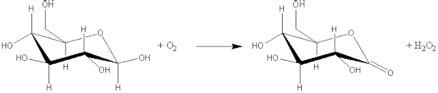
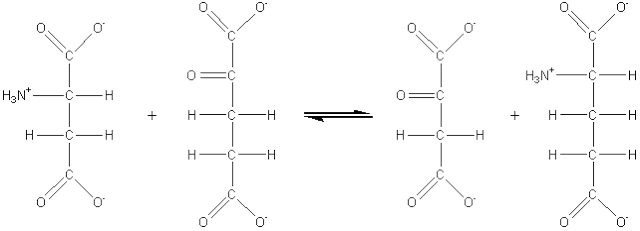
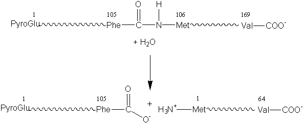
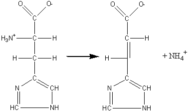
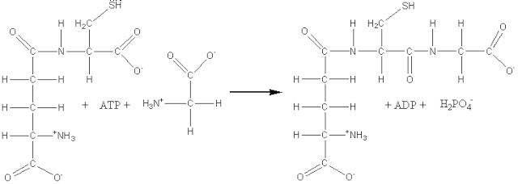

|
|
Enzyme nomenclature
Enzymes are classified according the report of a Nomenclature Committee appointed by the International Union of Biochemistry (1984). This enzyme commission assigned each enzyme a recommended name and a 4-part distinguishing number. It should be appreciated that some alternative names remain in such common usage that they will be used, where appropriate, in this text. The enzyme commission (EC) numbers divide enzymes into seven main groups according to the type of reaction catalysed: (1) Oxidoreductases which involve redox reactions in which hydrogen or oxygen atoms or electrons are transferred between molecules. This extensive class includes the dehydrogenases (hydride transfer), oxidases (electron transfer to molecular oxygen), oxygenases (oxygen transfer from molecular oxygen) and peroxidases (electron transfer to peroxide). For example: glucose oxidase (EC 1.1.3.4, systematic name, b-D-glucose:oxygen 1-oxidoreductase).  D-glucono-1,5-lactone + hydrogen peroxide" width="640" height="136">
b-D-glucose + oxygen (2) Transferases which catalyse the transfer of an atom or group of atoms (e.g., acyl-, alkyl- and glycosyl-), between two molecules, but excluding such transfers as are classified in the other groups (e.g., oxidoreductases and hydrolases). For example: aspartate aminotransferase (EC 2.6.1.1, systematic name, L-aspartate:2-oxoglutarate aminotransferase; also called glutamic-oxaloacetic transaminase or simply GOT).  L-aspartate + 2-oxoglutarate (3) Hydrolases which involve hydrolytic reactions and their reversal. This is presently the most commonly encountered class of enzymes within the field of enzyme technology and includes the esterases, glycosidases, lipases and proteases. For example: chymosin (EC 3.4.23.4, no systematic name declared; also called rennin).  para-kappa-casein + caseino macropeptide" width="594" height="243"> k-casein + water
(4) Lyases which involve elimination reactions in which a group of atoms is removed from the substrate. This includes the aldolases, decarboxylases, dehydratases and some pectinases but does not include hydrolases. For example: histidine ammonia-lyase (EC 4.3.1.3, systematic name, L-histidine ammonia-lyase; also called histidase).  urocanate + ammonia" width="377" height="224"> L-histidine (5) Isomerases which catalyse molecular isomerisations and includes the epimerases, racemases and intramolecular transferases. For example: xylose isomerase (EC 5.3.1.5, systematic name, D-xylose ketol-isomerase; commonly called glucose isomerase). a-D-glucopyranose
(6) Ligases, also known as synthetases, form a relatively small group of enzymes which involve the formation of a covalent bond joining two molecules together, coupled with the hydrolysis of a nucleoside triphosphate. For example: glutathione synthase (EC 6.3.2.3, systematic name, g-L-glutamyl-L-cysteine:glycine ligase (ADP-forming); also called glutathione synthetase).  ADP + phosphate + glutathione" width="640" height="228"> ATP + g-L-glutamyl-L-cysteine
+ glycine (7) Translocases catalyse the translocation of ions or groups, such as the hydron (H+) translocation or charge separation linked to oxidoreductase reactions. This page was established in 2004 and last updated by Martin
Chaplin |